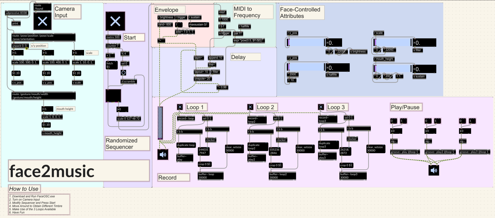

Facial tracking & mapping
FaceOSC sends facial tracking data through OSC. I receive these messages in Max/MSP, scale values to usable ranges, and store them in variables for intuitive sound control.
Interactive Music · Max/MSP
An experimental music-making interface that transforms facial movement into sound, inviting users to explore musical expression through interaction rather than traditional instruments.
Interactive instrument · Max/MSP · FaceOSC · Karplus–Strong Synthesis · Audio Loops

Overview / 01
Turning natural facial movement into dynamic musical patterns.
Facial tracking to sound
Face2Music is a face-controlled sequencer powered by FaceOSC, a standalone desktop program that tracks facial features through a camera and transmits them over Open Sound Control (OSC).
The horizontal position of the face modulates note brightness, vertical position influences resonance, distance from the camera adjusts the filter cutoff, and mouth height determines sustain. Together, these controls let users shape the sound through natural movements.
The patch uses a randomized sequencer with an eight-note pool, reshuffled every fourth repetition to generate evolving musical patterns. A looping module also supports recording, playback, and pausing across three independent tracks.
Guide / 02
How to use
Follow these steps to explore the instrument and create your own patterns.
Motivation / 03
Why this project exists
Making music production accessible to beginners has long been one of my academic interests. This passion began while volunteering as a music teacher for children at a local community center.
Many of the children, aged seven to eight, struggled to connect with music and recognize its universality and possibilities. I understood that feeling: when I was younger, my own exposure to music was limited to classical and pop. Hearing Guns N' Roses' “Welcome to the Jungle” showed me how diverse and powerful music could be.
Face2Music grew from the desire to make that sense of discovery more accessible. By turning familiar physical movements into musical controls, the project encourages children and beginners to experiment, listen, and create without first needing to master a traditional instrument.
Engineering / 04
System architecture
The project integrates computer vision tracking via FaceOSC with real-time digital signal processing inside Max/MSP, combining custom OSC mapping, algorithmic sequencing, and physical modeling synthesis.
FaceOSC sends facial tracking data through OSC. I receive these messages in Max/MSP, scale values to usable ranges, and store them in variables for intuitive sound control.
The sequencer uses a multislider to store note values and zl.scramble to reshuffle them every fourth repetition triggered by a 500ms metro, converted to MIDI for synthesis.
Synthesis begins with a random noise buffer generated by rand~ 600, shaped by low-pass filtering and feedback to simulate the decay of a plucked string.
Outputs route to three independent tracks using buffer~, record~, and groove~ objects with clocker coordination for precise recording and playback control.
Demonstration / 05
Video walkthrough
Watch the demonstration to see the Face2Music patch in action and learn how its controls and looping system work.
Download the Max/MSP patch to explore the sequencer and experiment with facial control and looping.
Max/MSP Patch File
Download Max/MSP FileFaceOSC and a compatible Max/MSP environment are required to use the project.